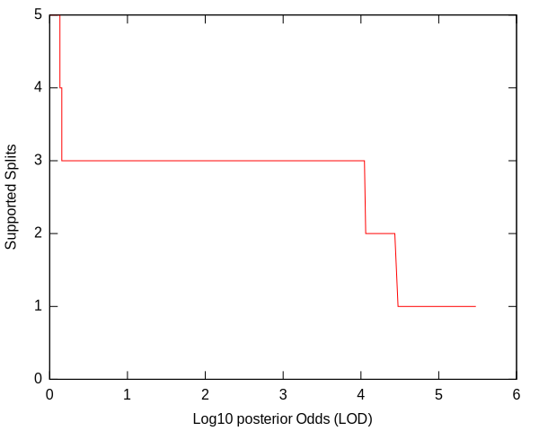
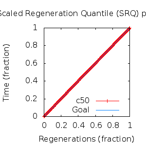
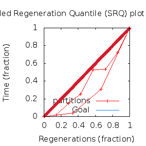

MCMC Post-hoc Analysis: 8 sequences
Data & Model
| Partition | Sequences | Lengths | Alphabet | Substitution Model | Indel Model | Scale Model |
|---|
| 1 |
E5_gammadelta_delta_aa_reduced.fas |
43 - 165 |
Amino-Acids | S1 = lg08+f |
I1 = rs07 |
scale1 ~ gamma[0.5,2] |
Scalar variables
| Statistic | Median | 95% BCI | ACT | ESS | burnin | PSRF-CI80% | PSRF-RCF |
|---|
| prior |
-98.04 |
(-119.2, -78.59) |
27.12 |
9956 |
203
|
0.9998 | 0.9956
|
| prior_A1 |
-88.4 |
(-103.3, -72.99) |
3.013 |
89609 |
136
|
1.001 | 0.9944
|
| likelihood |
-1229 |
(-1244, -1215) |
4.163 |
64854 |
159
|
0.9999 | 0.9969
|
| posterior |
-1327 |
(-1345, -1311) |
36.97 |
7303 |
433
|
1 | 0.9981
|
| Heat.beta |
1 |
| | | | | |
| Scale[1] |
2.063 |
(0.8597, 3.958) |
1.046 |
258231 |
96
|
0.9997 | 1
|
| f:pi[A] |
0.05251 |
(0.03108, 0.0766) |
7.748 |
34848 |
305
|
0.9994 | 1.008
|
| f:pi[R] |
0.01581 |
(0.004127, 0.03188) |
8.354 |
32319 |
498
|
0.9998 | 1.004
|
| f:pi[N] |
0.02739 |
(0.01158, 0.04604) |
8.335 |
32393 |
289
|
1 | 0.9969
|
| f:pi[D] |
0.05095 |
(0.02573, 0.08003) |
7.823 |
34512 |
231
|
0.9996 | 1
|
| f:pi[C] |
0.04255 |
(0.02237, 0.06592) |
8.118 |
33259 |
537
|
0.9998 | 1.014
|
| f:pi[Q] |
0.04288 |
(0.02229, 0.06691) |
7.843 |
34423 |
252
|
1 | 1.001
|
| f:pi[E] |
0.02024 |
(0.006458, 0.03799) |
8.16 |
33086 |
433
|
0.9998 | 1.002
|
| f:pi[G] |
0.03865 |
(0.01727, 0.06423) |
8.151 |
33123 |
480
|
0.9996 | 0.9986
|
| f:pi[H] |
0.03792 |
(0.01937, 0.0595) |
7.736 |
34902 |
381
|
0.9998 | 0.9984
|
| f:pi[I] |
0.0523 |
(0.03412, 0.07344) |
7.842 |
34428 |
503
|
1 | 0.9975
|
| f:pi[L] |
0.1726 |
(0.134, 0.2134) |
7.087 |
38096 |
315
|
0.9997 | 1.002
|
| f:pi[K] |
0.04118 |
(0.02025, 0.06671) |
8.469 |
31882 |
527
|
1 | 1.001
|
| f:pi[M] |
0.01981 |
(0.009411, 0.03254) |
7.758 |
34803 |
477
|
1 | 1.003
|
| f:pi[F] |
0.05536 |
(0.03398, 0.07929) |
7.483 |
36084 |
287
|
1 | 1.004
|
| f:pi[P] |
0.02601 |
(0.009573, 0.04756) |
8.052 |
33531 |
378
|
0.9997 | 0.9998
|
| f:pi[S] |
0.04231 |
(0.02353, 0.06388) |
7.946 |
33980 |
458
|
0.9999 | 1.003
|
| f:pi[T] |
0.09171 |
(0.06294, 0.1242) |
7.553 |
35746 |
550
|
1 | 1.006
|
| f:pi[W] |
0.01918 |
(0.005857, 0.03631) |
8.344 |
32357 |
502
|
0.9999 | 1.004
|
| f:pi[Y] |
0.05004 |
(0.02899, 0.07447) |
7.653 |
35281 |
456
|
1 | 0.9963
|
| f:pi[V] |
0.08251 |
(0.05719, 0.1093) |
7.668 |
35212 |
211
|
1 | 1.003
|
| rs07:mean_length |
13.71 |
(7.435, 22.85) |
1.665 |
162192 |
129
|
1 | 1.002
|
| rs07:log_rate |
-3.891 |
(-4.557, -3.187) |
1.533 |
176178 |
154
|
1 | 0.9985
|
| |A1| |
173 |
(168, 181) |
2.536 |
106476 |
152 |
0.875 | 0.9966
|
| #indels1 |
9 |
(7, 11) |
2.92 |
92461 |
79 |
0.6667 | 0.9991
|
| |indels1| |
134 |
(125, 153) |
2.375 |
113696 |
98 |
0.9643 | 0.9976
|
| #substs1 |
158 |
(152, 164) |
3.524 |
76619 |
113 |
0.8889 | 0.9972
|
| Scale1*|T| |
2.158 |
(1.731, 2.625) |
1.609 |
167841 |
101
|
1 | 0.9985
|
| |A| |
173 |
(168, 181) |
2.536 |
106476 |
152 |
0.875 | 0.9966
|
| #indels |
9 |
(7, 11) |
2.92 |
92461 |
79 |
0.6667 | 0.9991
|
| |indels| |
134 |
(125, 153) |
2.375 |
113696 |
98 |
0.9643 | 0.9976
|
| #substs |
158 |
(152, 164) |
3.524 |
76619 |
113 |
0.8889 | 0.9972
|
| |T| |
1.047 |
(0.431, 1.86) |
1 |
270003 |
64
|
1 | 1
|
Phylogeny Distribution


Alignment Distribution
Partition 1
|
|
|
Diff |
|
Min. %identity |
# Sites |
Constant |
Informative |
| Initial |
FASTA |
HTML |
Diff |
|
1.43% |
165 |
1 (0.606%) |
158 (95.8%) |
| Best (WPD) |
FASTA |
HTML |
|
AU |
10.8% |
174 |
12 (6.9%) |
143 (82.2%) |
Mixing
Statistics: | scalar burnin | 550 | | scalar ESS | 7304 | | topological ESS | | | ASDSF | NA | | MSDSF | NA | | PSRF CI80% | 1.001 | | PSRF RCF | 1.014 |
|  |
Analysis
directory: /work/awillemsen/bali-phy/AlphaPVs_E5_aa_new_reduced
version: 3.3
| chain # | burnin | subsample | Iterations (after burnin) | command line | subdirectory |
|---|
| 1 |
10000 |
1 |
90000 |
bali-phy E5_gammadelta_delta_aa_reduced.fas -s 96345 --smodel lg08 -i 100000 -n AlphaPVs_E5_red_gammadelta_delta |
AlphaPVs_E5_red_gammadelta_delta-1 |
| 2 |
10000 |
1 |
90000 |
bali-phy E5_gammadelta_delta_aa_reduced.fas -s 34556 --smodel lg08 -i 100000 -n AlphaPVs_E5_red_gammadelta_delta |
AlphaPVs_E5_red_gammadelta_delta-2 |
| 3 |
10000 |
1 |
90000 |
bali-phy E5_gammadelta_delta_aa_reduced.fas -s 82373 --smodel lg08 -i 100000 -n AlphaPVs_E5_red_gammadelta_delta |
AlphaPVs_E5_red_gammadelta_delta-3 |
| P(data|M) = -1243.062 +- 0.096
|
Complete sample: 22
topologies |
95% Bayesian credible interval: 10 topologies |
Model and priors
Tree (+priors)
| topology | ~ uniform on tree topologies |
| branch lengths | ~ iid[num_branches[T],gamma[0.5,div[2,num_branches[T]]]] |
Substitution model (+priors)
| S1 | = |
lg08+f
| f:pi | ~ | dirichlet_on[letters[@a],1]
|
|
Indel model (+priors)
| I1 | = |
rs07
| rs07:log_rate | ~ | laplace[-4,0.707]
|
| rs07:mean_length | ~ | exponential[10,1]
|
|
Scales (+priors)
{kind=link}
{kind=link}
{kind=link}
{kind=link}
{kind=link}
{kind=link}
{kind=link}
{kind=link}